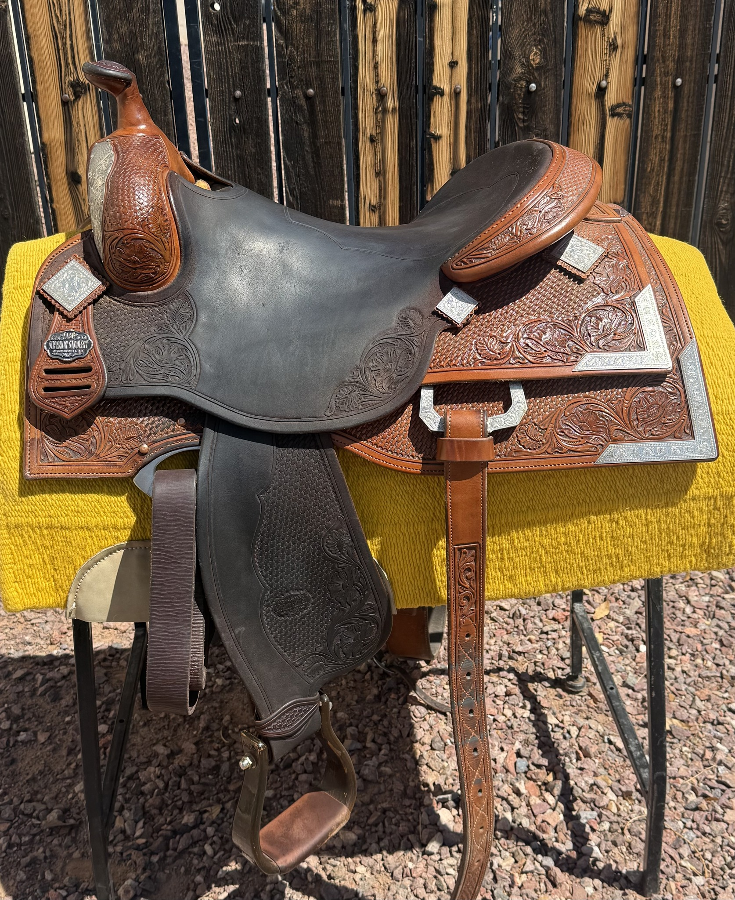
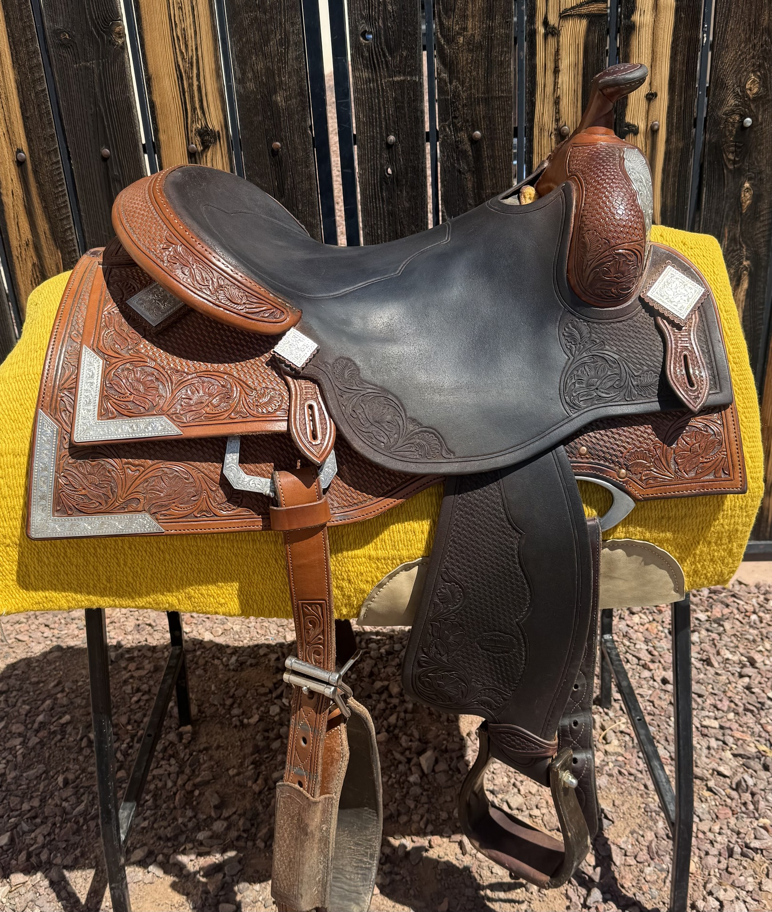
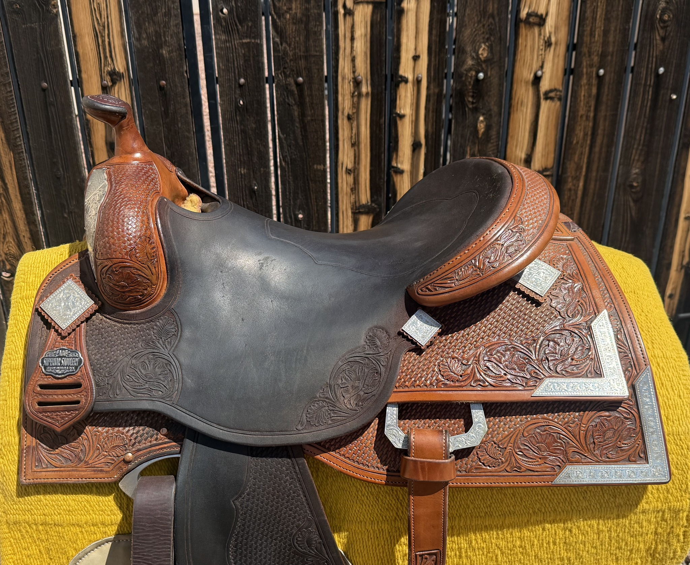
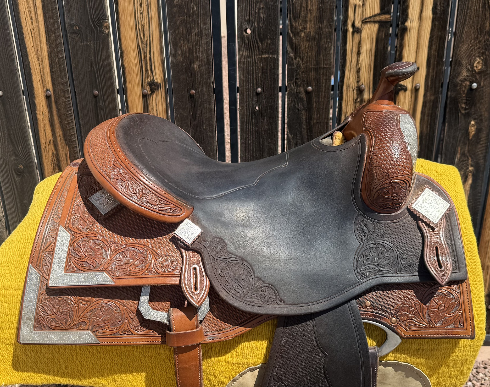
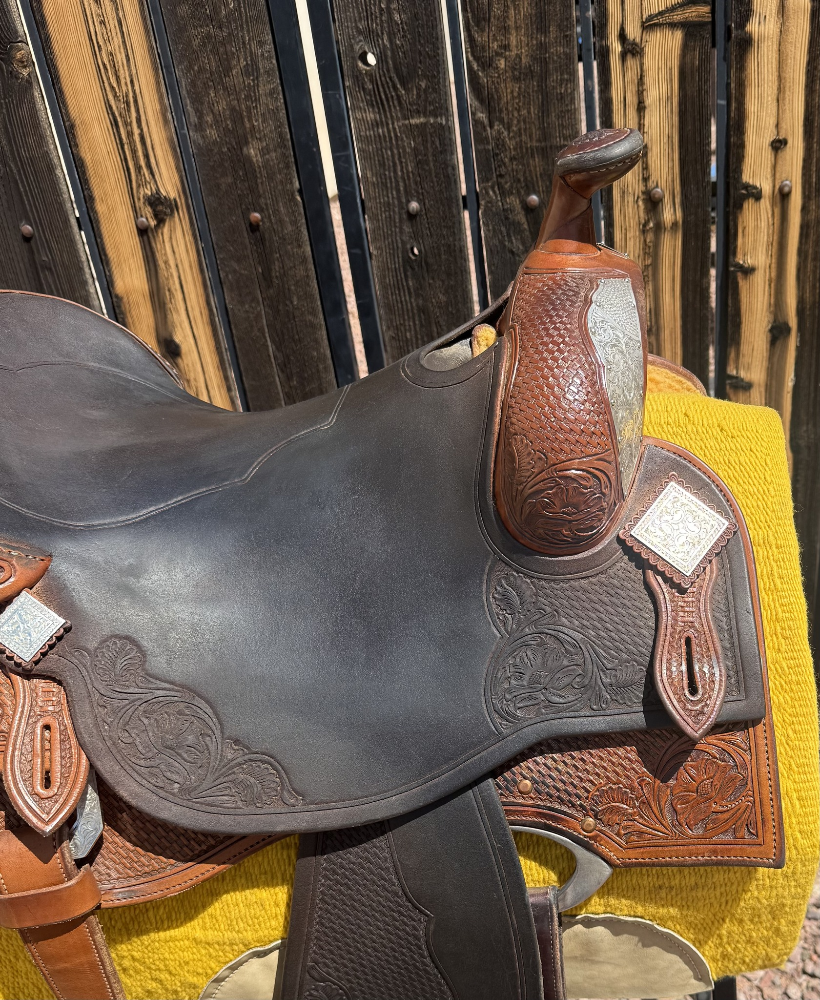
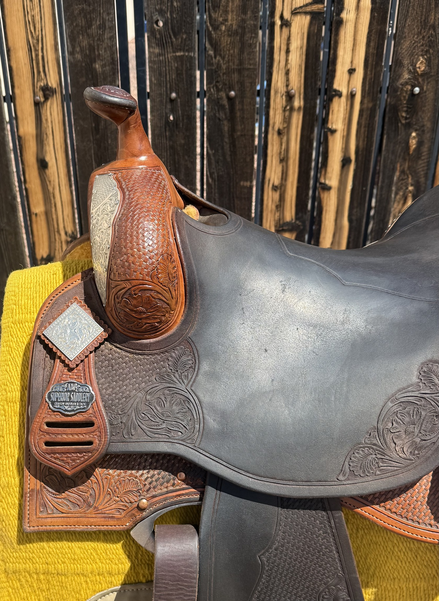
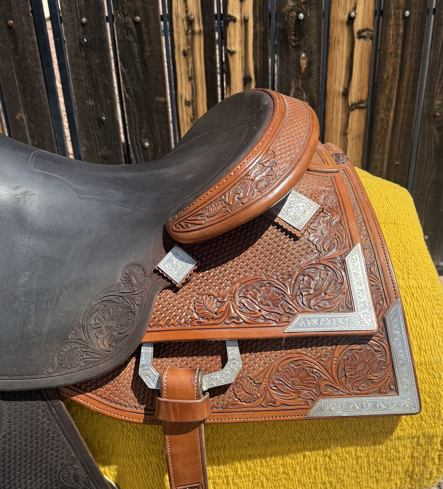
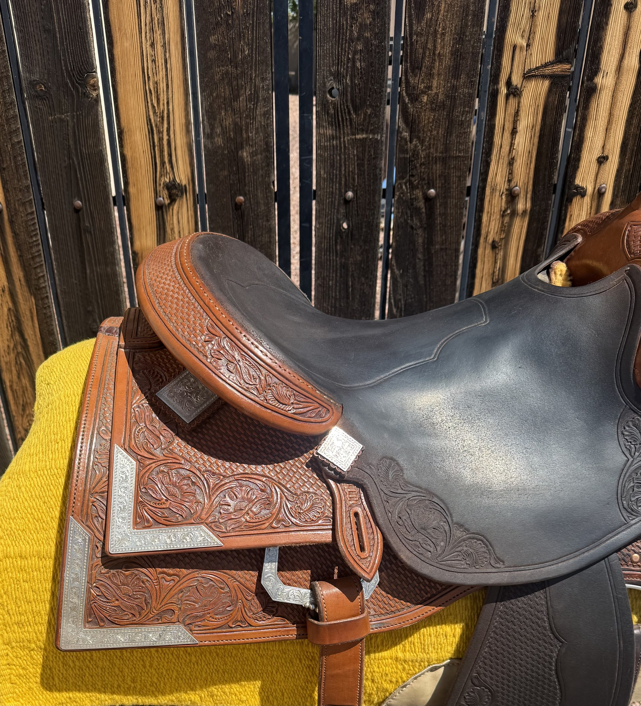
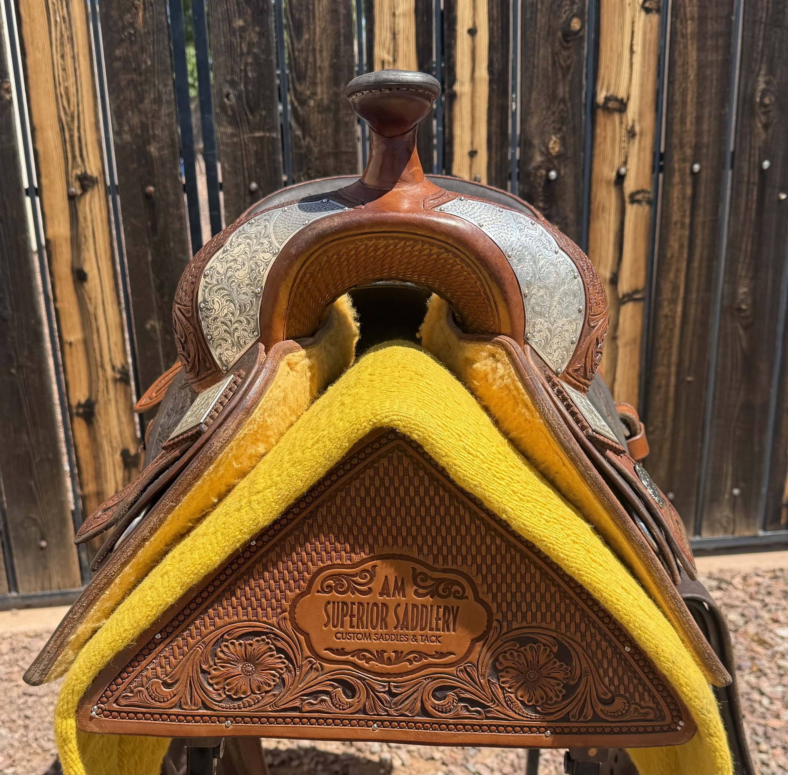
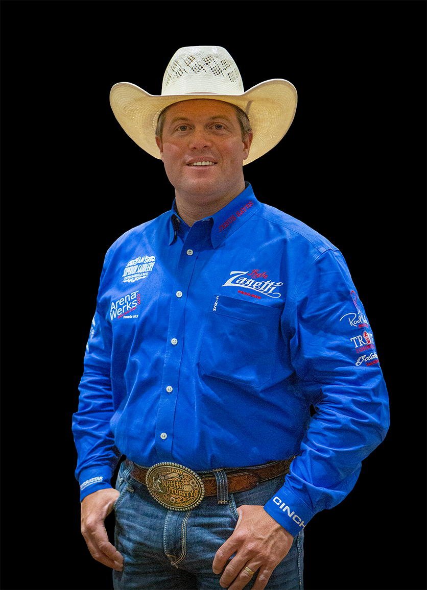

Superior Saddlery — A. Maschke
Casey Deary Reiner — 16" Seat
Pre-Owned — Excellent
$5,995
Sale Price
| Maker | Superior Saddlery — A. Maschke |
| Model | Casey Deary Reiner |
| Seat Size | 16" |
| Seat | Dark / Black Smooth Leather |
| Tooling | Hand Tooled Basketweave & Floral |
| Silver | Sterling Silver Conchos |
| Silver Plates | Corner Plates & Swell Plates |
| Hardware | Rear Dee Rings |
| Endorser | Casey Deary — NRHA $6M Rider |
| Maker Brand | AM Superior Saddlery stamp visible |
| Condition | Pre-Owned — Excellent |

Casey Deary is a four-time NRHA Futurity Champion and $6 Million Dollar Rider — one of the most decorated reiners of his generation. Read his full bio →
Shipping available. David ships nationwide. Contact for a quote to your zip code.
David Solum Certified — Tree integrity verified, leather condition documented, rigging inspected. Full condition report available on request.
About This Saddle
The Casey Deary signature reiner by Superior Saddlery carries the endorsement of one of reining's most accomplished competitors — a four-time NRHA Futurity Champion, Derby Champion, and $6 Million Dollar Rider. This 16" example is built on Andy Mashke's proprietary SYMMETREES™ tree and features the full treatment that makes a Superior Saddlery show saddle stand apart: hand tooled basketweave and floral throughout, a dark smooth leather seat, and a comprehensive sterling silver package including corner plates, swell plates, conchos, and rear dees.
The silver corner plates on the skirts are a distinctive design element on this model — they provide a clean, geometric frame around the elaborately tooled skirt leather that photographs exceptionally well in the show pen. The AM Superior Saddlery brand stamp is clearly visible on the cantle, confirming provenance.
At $5,995 this saddle represents genuine value — a fully equipped, endorsed Superior Saddlery competition reiner with a full silver package, well below replacement cost for a new custom build. Certified by David Solum — contact him directly to arrange viewing or hold this saddle.
Ready to Inquire?
Inventory moves quickly. Contact David Solum today to ask questions, arrange viewing, or place a hold on this saddle.